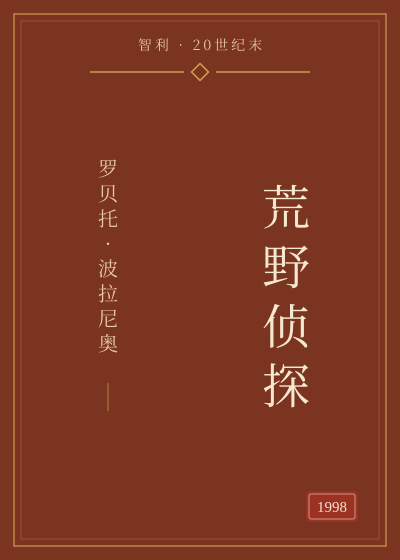

荒野侦探
一、基本信息
| 作者 | 罗贝托·波拉尼奥 |
|---|---|
| 成书/出版 | 1998年出版（Britannica：Los detectives salvajes (1998; The Savage Detectives)） Roberto Bolano — Encyclopaedia Britannica（百科全书） |
| 国别/地区 | 智利 |
| 时代 | 现当代 · 20世纪末 |
| 体裁 | 长篇小说 |
| 语言 | 西班牙语 |
《荒野侦探》口述接力图（主题·结构图）
二、创作背景
Britannica：'Bolaño's breakthrough work was Los detectives salvajes (1998)……The novel made Bolaño a literary star throughout Latin America'（突破之作、使其成为拉美文学明星）并获罗慕洛·加列戈斯奖（B251）。
作者：21世纪初南美文学领军人物之一（Britannica：one of the leading South American literary figures at the turn of the 21st century）。
三、内容脉络
三段结构：墨西哥城的'现实以下主义'诗人闯荡——寻找女诗人塞萨雷亚· Tinajero 的足迹——跨越二十年的口述接力（通说待核）。
中间部：以数十位口述者讲述两位'侦探'的漂泊（通说待核）。
四、主要人物表
| 人物 | 身份 | 说明 |
|---|---|---|
| 胡安与乌利塞斯 | 文学侦探 | 虚构诗人（通说待核） |
| 塞萨雷亚·蒂纳赫罗 | 消失的女诗人 | 寻访对象（通说待核） |
五、主题与艺术特点
- 文学浪游与暴力年代（通说）。
- 口述接力：'侦探'的真相永不可得（通说）。
- 一代诗人的挽歌（通说）。
六、影响与评论
- Britannica：获罗慕洛·加列戈斯奖、使其成为拉美文学明星（B251）。
Roberto Bolano — Encyclopaedia Britannica（百科全书） - 《2666》身后出版奠定世界声誉（Britannica：magnum opus, 2666 (2004)）。
Roberto Bolano — Encyclopaedia Britannica（百科全书）
七、阅读建议
难点
- 口述者众多——先列名单。
- 拉美诗歌史影射。
- 《荒野侦探》（上海人民出版社，通说待核）。
先本作后《2666》；对照《百年孤独》的口述史。
八、待核实
- 中译本信息核对。
- 现实以下主义（infrarrealismo）细节待核。
- 圣特雷莎与《2666》的关系待核。
本页主要来源
罗贝托·波拉尼奥的其他收录作品：荒野侦探